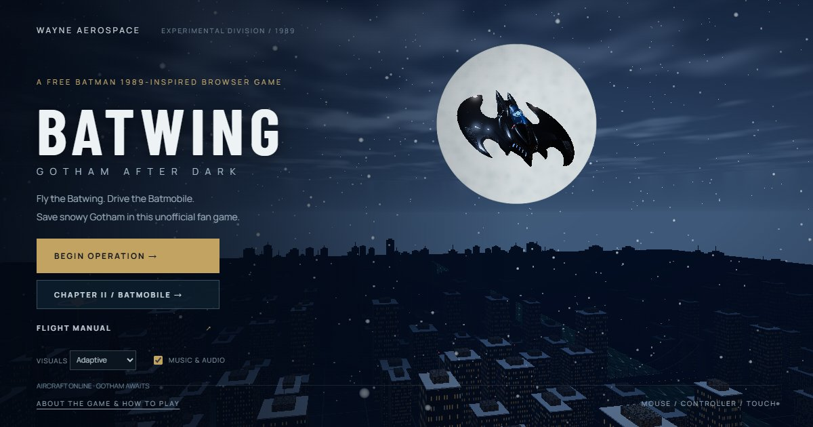

BATWING / GOTHAM AFTER DARK
A free Batman 1989-inspired browser game
Take the Batwing above a snow-covered Gotham skyline, then take the Batmobile through its streets. Gotham After Dark is an unofficial fan-made action game with two playable chapters, built to run in your browser on desktop and mobile.
Play Batman 1989-inspired game online →
Chapter I: fly the Batwing
A rogue drone network is attacking Gotham's heating grid while families evacuate. Fly between skyscrapers, intercept bombers and destroy three command relays. Interceptors warn before making attack runs, and escorts protect the bombers.
Your cannons and homing missiles can disable enemy aircraft and relays. Follow the minimap and objective marker, watch your armour and protect the city grid. The mission has a ten-minute maximum, with an earlier finish available after the final defence.
Chapter II: drive the Batmobile
Deliver an encrypted override to Gordon at the cathedral before the network reconnects. The five-minute route runs through the theatre district and beneath the elevated railway. Gold road arrows and turn instructions guide you through the junctions.
Use the jet boost on clear stretches, brake for corners and trigger EMP to interrupt drone attacks. Road recovery returns you to the current route without resetting the mission clock.
How to play on desktop and mobile
- Mobile: use the on-screen steering controls and action buttons. Landscape gives the city, minimap and controls more room.
- Desktop: mouse, keyboard and controller input are supported. Open the flight manual from the menu for the full flight controls.
- Batmobile: W/S accelerate, brake and reverse; A/D steer; Shift boosts; Space is the handbrake; F activates EMP.
Enable music and audio for the original synthesized score and voiced opening briefing featuring Alfred, Gordon and Batman. You can skip the briefing. Use Performance visuals if your device struggles.
Is this the original Batman 1989 game?
No. This is a new browser fan game inspired by the atmosphere and vehicles associated with Batman 1989. It is not an emulation, rerelease or official sequel to the original licensed games.
Is it free, and do I need to install anything?
It is free to play, with no game installation or account required. Your browser downloads the game assets when you open it. JavaScript, WebGL and a capable device are required; performance varies by device.
Is this an official Batman game?
No. Gotham After Dark is an unofficial fan project and is not affiliated with or endorsed by DC or Warner Bros. Model creators, asset licences and synthetic voice credits are listed on the credits page.
Playable preview: both chapters are available. Try the flight and driving missions and see how they feel on your device.
Enter Gotham — play free →